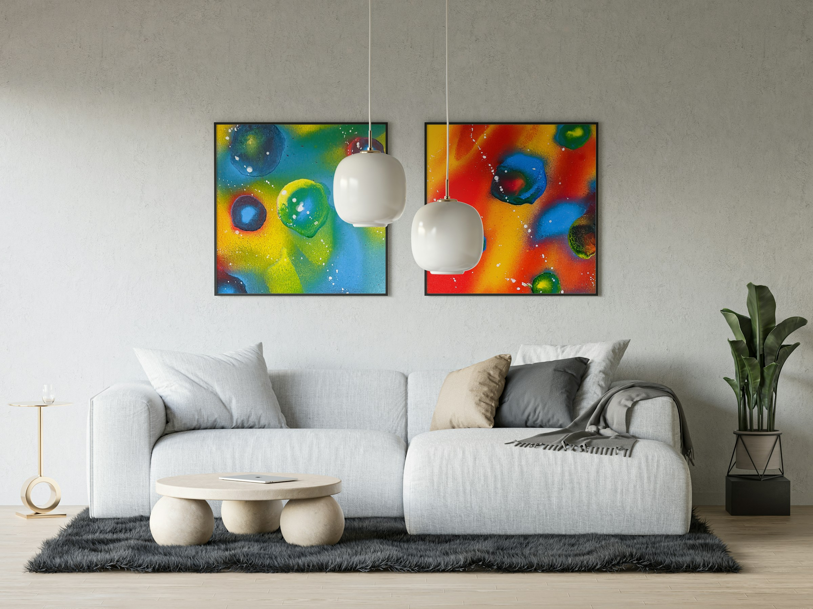

How to Choose Artwork for Living Room
Choosing artwork for your living room is not just about filling empty walls. It’s about creating a space that feels balanced, welcoming, and reflective of your personality. Many people get confused about size, colors, and placement, which often leads to poor decisions.

What is Living Room Wall Art?
Living room wall art refers to decorative artwork such as paintings, prints, or digital designs that enhance the visual appeal of a living space. It plays a key role in defining the mood, style, and personality of your home.
Start with Your Space and Wall Size
Before selecting any artwork, take a good look at your wall. A small frame on a large wall can look awkward, while oversized art in a small room can feel overwhelming. Measure your space and choose artwork that fits proportionally.
Match Colors with Your Interior
Your artwork should complement your furniture, curtains, and overall color theme. You don’t need exact matching, but there should be harmony. Neutral tones work well in most spaces, while bold colors can create a strong focal point.
Placement Matters More Than You Think
A common mistake is hanging artwork too high. Ideally, the center of the artwork should be at eye level. If you are placing art above a sofa, keep it close enough so it feels connected to the furniture.
Choose Art That Reflects Your Style
Trends come and go, but your taste matters most. Whether you prefer abstract, landscape, or modern art, choose something that you enjoy seeing every day.
If you are confused between different types of art, you can also read our guide on original art vs prints to make a better decision.
Final Thoughts
The right artwork can completely transform your living room. Focus on size, color, placement, and personal taste. When everything comes together, your space will naturally feel more complete and stylish.
Why Wall Art Matters in Living Rooms
Many homeowners consider wall art essential for creating a complete and visually appealing living space. Well-chosen artwork enhances aesthetics and improves the overall atmosphere of a room.
Design experts also suggest that properly sized and placed artwork can make a room feel more balanced and spacious, especially in compact living areas.
Types of Artwork for Living Rooms
| Type of Art | Best For | Style Impact |
|---|---|---|
| Abstract Art | Modern interiors | Bold and expressive |
| Landscape Art | Calm and natural spaces | Relaxing and peaceful |
| Minimalist Art | Small apartments | Clean and simple |
| Digital Prints | Budget-friendly decor | Flexible and customizable |
Frequently Asked Questions
What size artwork is best for a living room?
The size should match your wall space. Large walls need bigger artwork or a gallery wall, while smaller walls work better with medium-sized pieces.
Should living room artwork match furniture?
It should complement the furniture colors and style, but it does not need to match exactly. Harmony is more important than perfect matching.
Where should artwork be placed in a living room?
Artwork should be placed at eye level and close to furniture like sofas to create a connected and balanced look.
What type of art is best for living rooms?
Abstract, landscape, and modern art styles are commonly used in living rooms, depending on your personal taste.
How many artworks should I hang?
You can use a single large piece or create a gallery wall with multiple smaller artworks depending on your space.
Is digital wall art good for living rooms?
Yes, digital wall art is affordable and flexible, making it a great option for modern living spaces.